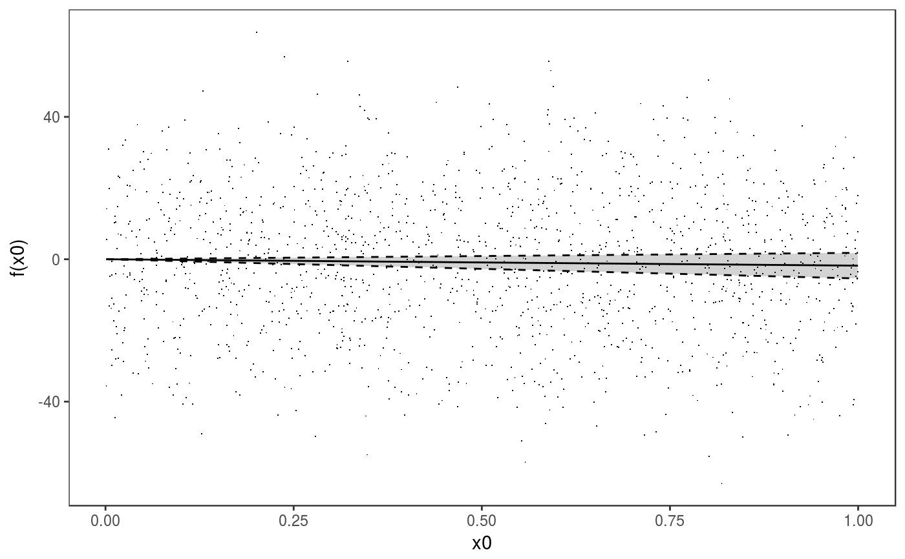
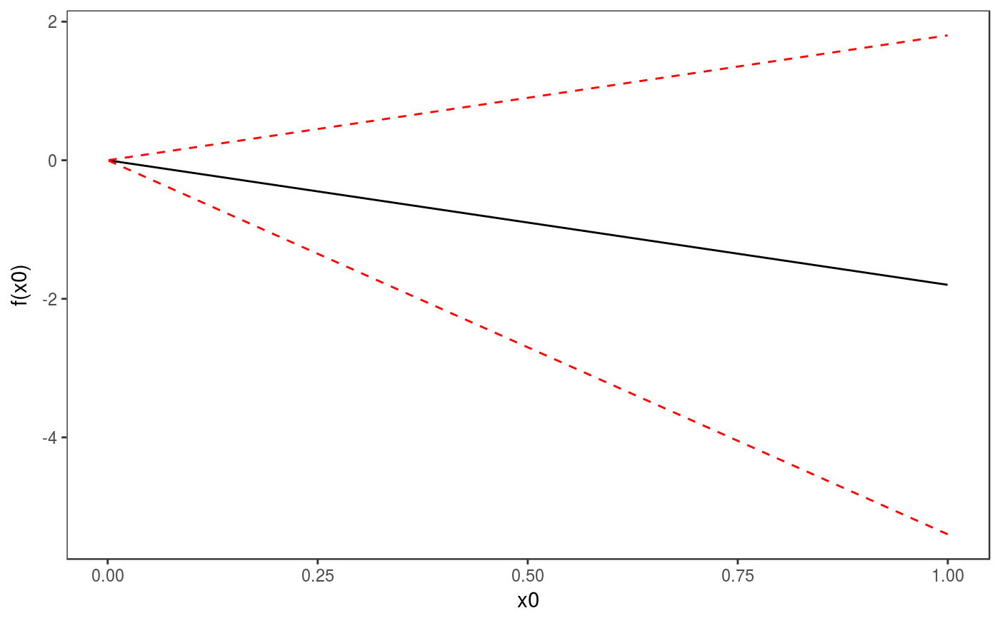
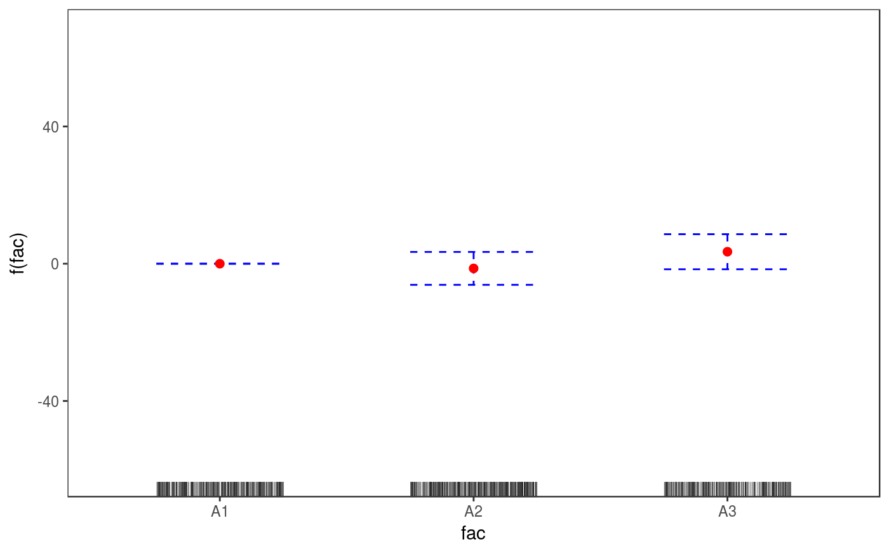
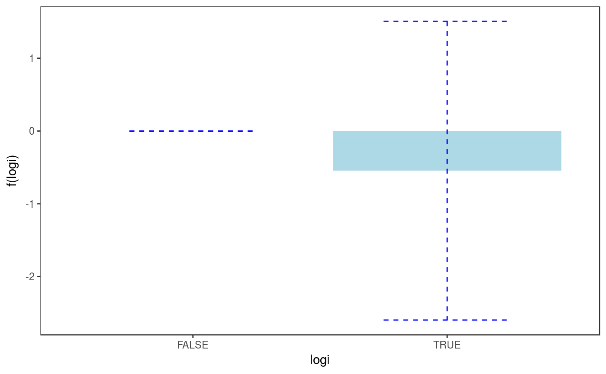
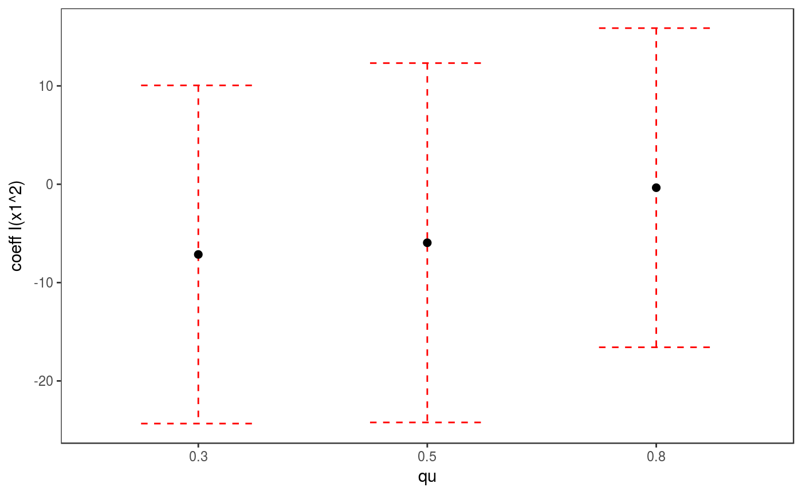
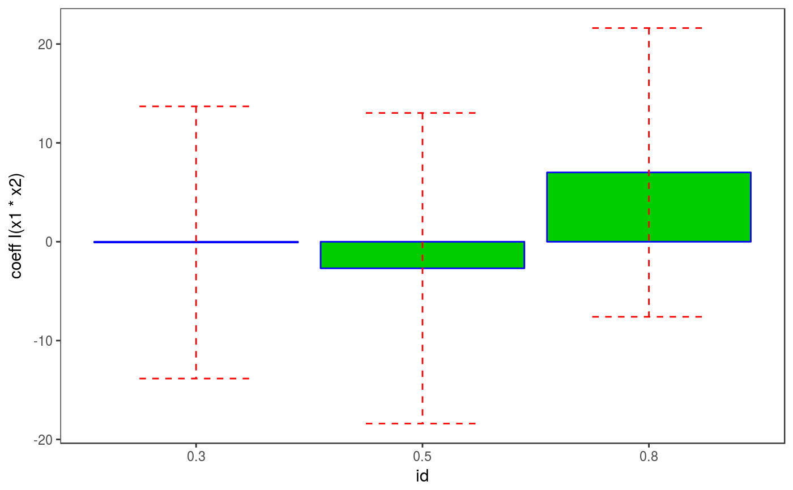
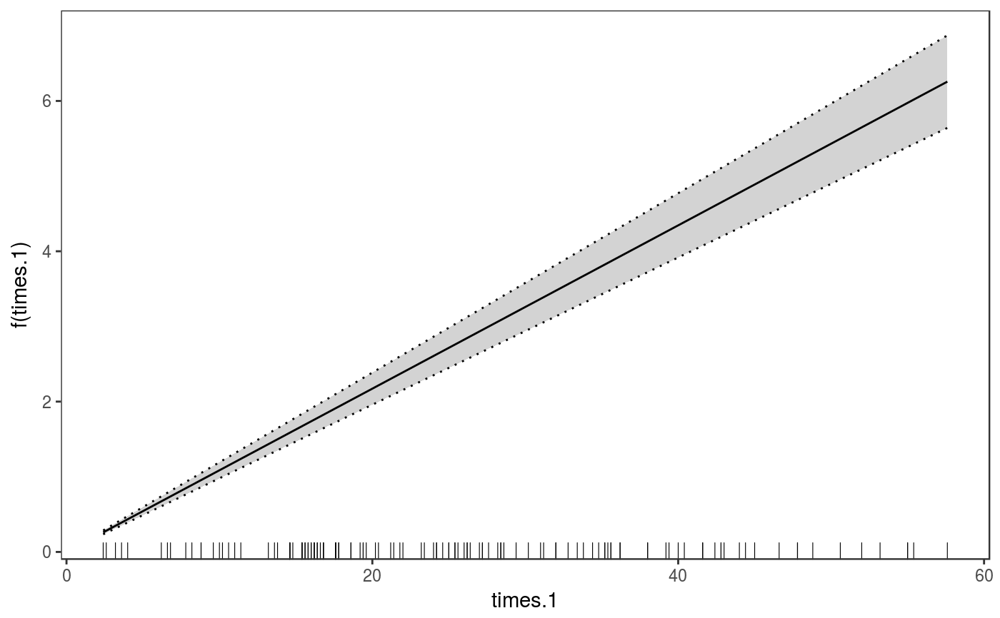
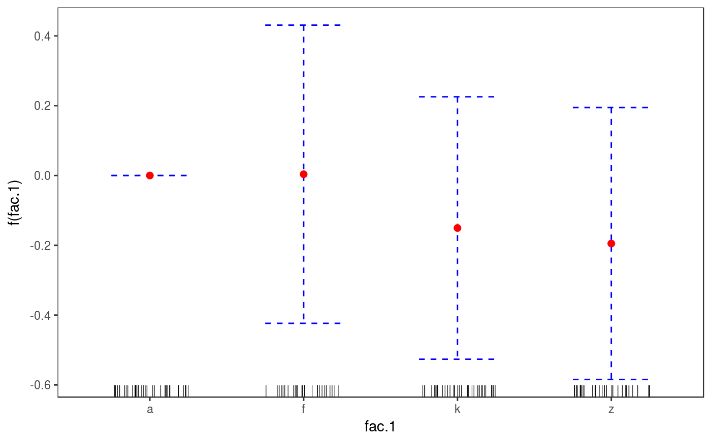

This function can be used to extract a parametric effect from an object of
class gamViz.
pterm(o, select)
Arguments
| o | an object of class |
|---|---|
| select | index of the selected parametric effect. |
Value
An object of class "pTermSomething" where "Something" is substituted with
the class of the variable of interest. For instance if this "numeric", the pterm
will return an object of class "ptermNumeric".
Examples
####### 1. Gaussian GAM library(mgcViz) set.seed(3) dat <- gamSim(1,n=1500,dist="normal",scale=20)#> Gu & Wahba 4 term additive modeldat$fac <- as.factor( sample(c("A1", "A2", "A3"), nrow(dat), replace = TRUE) ) dat$logi <- as.logical( sample(c(TRUE, FALSE), nrow(dat), replace = TRUE) ) bs <- "cr"; k <- 12 b <- gam(y ~ x0 + x1 + I(x1^2) + s(x2,bs=bs,k=k) + fac + x3:fac + I(x1*x2) + logi,data=dat) o <- getViz(b) # Plot effect of 'x0' pt <- pterm(o, 1) plot(pt, n = 60) + l_ciPoly() + l_fitLine() + l_ciLine() + l_points()# Plot effect of 'fac' pt <- pterm(o, 4) plot(pt) + l_ciBar(colour = "blue") + l_fitPoints(colour = "red") + l_rug(alpha = 0.3)# Plot effect of 'logi' pt <- pterm(o, 6) plot(pt) + l_fitBar(a.aes = list(fill = I("light blue"))) + l_ciBar(colour = "blue")# Plot effect of 'x3:fac': no method available yet available for second order terms pt <- pterm(o, 7) plot(pt)#>####### 1. Continued: Quantile GAMs b <- mqgamV(y ~ x0 + x1 + I(x1^2) + s(x2,bs=bs,k=k) + x3:fac + I(x1*x2) + logi, data=dat, qu = c(0.3, 0.5, 0.8))#> Estimating learning rate. Each dot corresponds to a loss evaluation. #> qu = 0.5............done #> qu = 0.3........done #> qu = 0.8........done# Don't know how to plot this interaction plot(pterm(b, 6))#>####### 2. Gaussian GAMLSS model library(MASS) mcycle$fac <- as.factor( sample(c("z", "k", "a", "f"), nrow(mcycle), replace = TRUE) ) b <- gam(list(accel~times + I(times^2) + s(times,k=10), ~ times + fac + s(times)), data=mcycle,family=gaulss(), optimizer = "efs") o <- getViz(b) # Plot effect of 'I(times^2)' on mean: notice that partial residuals # are unavailable for GAMLSS models, hence l_point does not do anything here. pt <- pterm(o, 2) plot(pt) + l_ciPoly() + l_fitLine() + l_ciLine() + l_points()#># Plot effect of 'times' in second linear predictor. # Notice that partial residuals are unavailable. pt <- pterm(o, 3) plot(pt) + l_ciPoly() + l_fitLine() + l_ciLine(linetype = 3) + l_rug()# Plot effect of 'fac' in second linear predictor. pt <- pterm(o, 4) plot(pt) + l_ciBar(colour = "blue") + l_fitPoints(colour = "red") + l_rug()